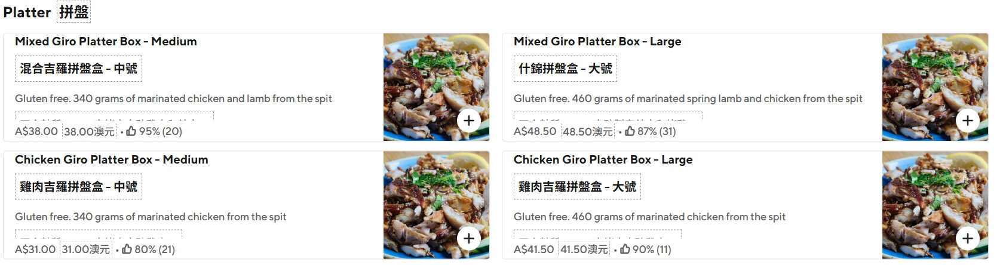
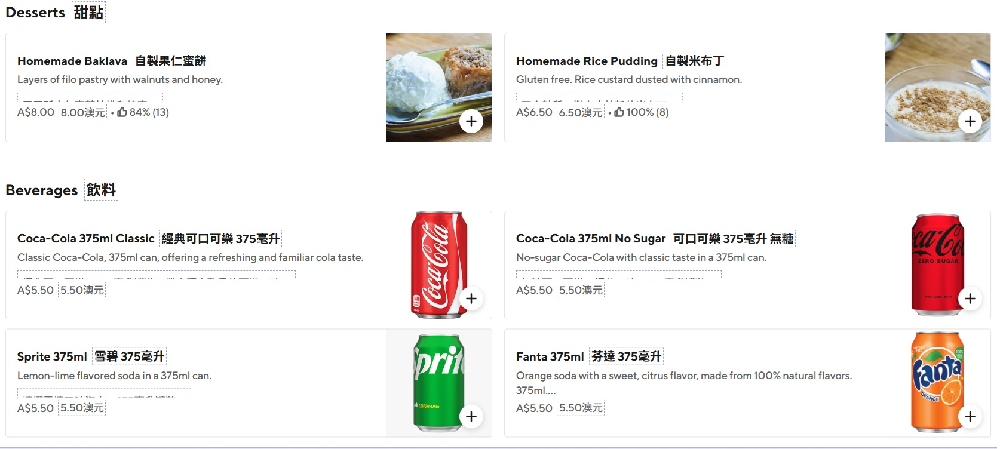

關於「鐘乳石」餐廳
Stalactites 是墨爾本希臘區（Greek Precinct）最負盛名的地標。這家由家族經營的餐廳以其獨特的室內裝飾——**手繪鐘乳石天花板**而得名。
這裡不僅是墨爾本人的集體回憶，更是許多遊客來到墨爾本的第一站。他們以嚴格選擇食材著稱，所有的肉類均來自澳洲本地農場，並採用傳統的旋轉烤肉（Giro）方式烹調。
![[希臘沙拉]](https://images.unsplash.com/photo-1512621776951-a57141f2eefd?auto=format&fit=crop&q=80&w=400)
100% 家族經營
傳承三代的傳統祕方
🌯 靈魂捲餅 (Souvlaki)
這是每個造訪者的必點選項，也是 Stalactites 稱霸墨爾本的原因。
經典羊肉/雞肉 Souvlaki
使用新鮮烤製的皮塔餅 (Pita)，包裹著多汁的旋轉烤肉、生菜、番茄、洋蔥，以及他們家靈魂所在的 **Tzatziki (希臘優格蒜泥醬)**。
The "Ironman" Souvlaki
為了向澳洲網球公開賽致敬而推出的品項。除了雙倍肉量，還加入了薯條在餅內！份量極大，適合大胃王挑戰。
墨爾本深夜宵夜的最佳選擇。
🥗 多人分享與正餐品項
![[希臘拼盤]](https://images.unsplash.com/photo-1544148103-0773bf10d330?auto=format&fit=crop&q=80&w=400)
Mixed Meat Platter
綜合肉類拼盤：適合 2-3 人，包含雞、羊肉、沙拉、皮塔餅與沾醬。
![[希臘木莎卡]](https://images.unsplash.com/photo-1505575967455-40e256f73376?auto=format&fit=crop&q=80&w=400)
Moussaka (木莎卡)
希臘千層派：茄子、絞肉與厚厚的貝夏梅醬，像蛋糕般紮實濃郁。
![[希臘沾醬]](https://images.unsplash.com/photo-1516685018646-54838bd1af70?auto=format&fit=crop&q=80&w=400)
Taramasalata / Hummus
必點前菜：搭配現烤熱皮塔餅，魚子醬或鷹嘴豆泥沾醬是希臘餐桌的靈魂。
💡 內行人的用餐貼士
-
⏳
避開高峰
晚餐時段（6-8PM）通常需要排隊。因為全天候服務，建議選擇下午或 9 點後的「宵夜時段」，氣氛更放鬆。
-
🥣
隱藏必點：Lemon Potatoes
這家的檸檬烤馬鈴薯吸飽了肉汁與檸檬香氣，是捲餅以外最讓人驚豔的副菜。
-
📱
外帶更快
如果你只是想吃 Souvlaki 捲餅，外帶區的處理速度通常比等內用桌位快得多。
-
🍰
別忘了甜點
Baklava (果仁蜜餅) 是甜食愛好者的天堂，甜度很高但配上希臘咖啡非常完美。